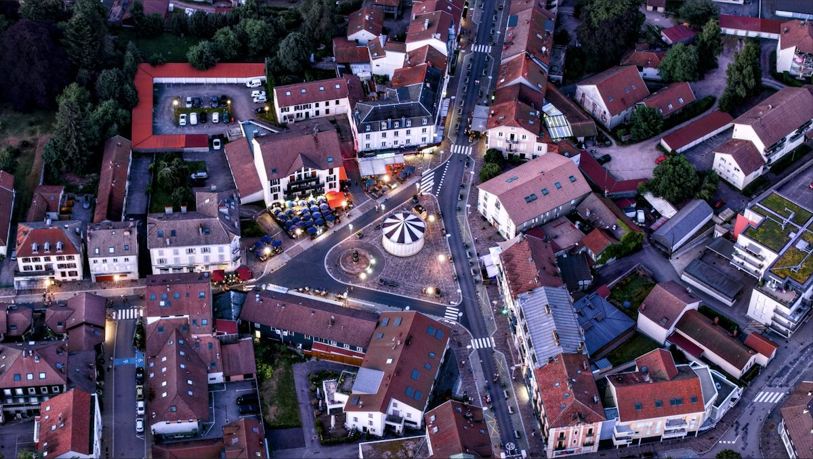
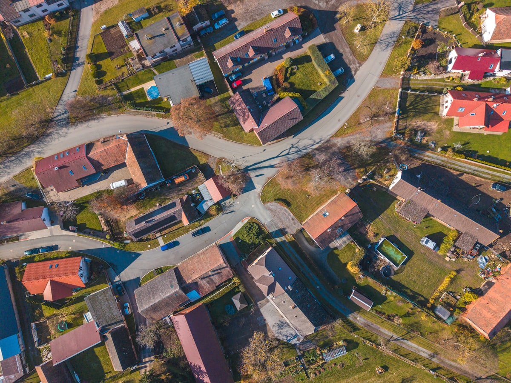

Обов'язковий інтегрований документ планування, що визначає стратегічні цілі, пріоритети та операційні дії територіальної громади на 7-річний горизонт — обов'язковий для кожної громади в Україні.
Регулюється Законом України «Про засади державної регіональної політики» № 825-VIII · Постановою КМУ № 385 від 2022 року · Бюджетним кодексом України, ст. 76.

«СРГ — це не формальність. Це юридична основа, на якій має ґрунтуватись кожен бюджет громади, інвестиційний проєкт та грантова заявка.»
Обов'язок планування
Відповідно до Закону № 825-VIII «Про засади державної регіональної політики» та Постанови КМУ № 385 (2022), кожна територіальна громада зобов'язана розробити, прийняти та реалізувати Стратегію розвитку громади — довгостроковий документ стратегічного планування, що визначає єдине бачення соціального, економічного, екологічного та інфраструктурного розвитку.
СРГ є основним довідковим документом для всього місцевого бюджетного планування, грантових заявок на фінансування та обґрунтування інвестиційних проєктів. Без неї громада не може отримувати державні субвенції чи брати участь у програмах регіонального розвитку.
Правова основа: Закон № 825-VIII, ст. 28–32 · Постанова КМУ № 385 (2022) · Закон № 280/97-ВР (Про місцеве самоврядування) · Бюджетний кодекс України, ст. 76
Кожен етап узгоджується з Агенцією регіонального розвитку та Міністерством розвитку громад і територій України
СРГ розробляється виконавчим органом ради громади за участю жителів, громадянського суспільства, бізнесу та місцевих установ. Документ підлягає обов'язковому громадському обговоренню перед прийняттям.
СРГ реалізується через циклічний 3-річний План операційних дій (ПОД), який перетворює стратегічні цілі на конкретні проєкти, відповідальні органи, терміни та бюджетні асигнування.
Основні параметри та юридичні терміни, які повинна виконати кожна громада за українським законодавством.

СРГ повинна охоплювати всі сфери життя громади: економіку та інвестиції, соціальні послуги, інфраструктуру, довкілля, просторове планування та спроможність управління.
Громади без затвердженої СРГ втрачають право на державні субвенції за ст. 103-5 Бюджетного кодексу та не можуть подавати заявки на програми регіонального розвитку, що фінансуються ЄС.
СРГ повинна ґрунтуватись на актуальних даних — демографічному аналізі, економічній базовій лінії, інвентаризації інфраструктури та чесній оцінці SWOT. Думка без даних — не планування.
Жителі, бізнес, громадські організації та установи — не пасивні отримувачі, вони формують стратегію через опитування, фокус-групи, громадські зустрічі та робочі комісії.
СРГ повинна узгоджуватись з Регіональною стратегією розвитку та Державною стратегією регіонального розвитку 2027. Стратегічні цілі не можуть суперечити документам планування вищого рівня.
Кожен проєкт ПОД повинен мати визначене джерело фінансування — власні доходи, державні субвенції, міжнародні гранти чи приватні інвестиції. Незабезпечені зобов'язання — не план дій.
Кожна стратегічна ціль повинна бути пов'язана з конкретним KPI з базовим значенням, цільовим значенням та щорічними віхами. Те, що не можна вимірити, не можна керувати чи звітувати.
Екологічна сталість, адаптація до зміни клімату та гендерна рівність повинні бути інтегровані горизонтально в усіх стратегічних напрямах — а не розглядатись як окремі секторальні розділи.
«Стратегія розвитку громади — це суспільний договір між радою та її жителями: публічне зобов'язання щодо спільного майбутнього, зафіксоване, забюджетоване та відстежуване.»Методичні рекомендації
Ми ведемо весь цикл розробки СРГ — від первинної діагностики до прийняття радою та щорічних оновлень моніторингу.
Ми проводимо повний територіальний аналіз: демографічні тенденції, економічні показники, стан інфраструктури, екологічні умови та покриття публічних послуг. Структуровано за SWOT та деревом проблем.
Ми розробляємо та проводимо повний процес консультацій з громадою — опитування, фокус-групи, семінари зі стейкхолдерами та громадські слухання — відповідно до законодавчої вимоги 60-денного обговорення.
Ми готуємо повний документ СРГ: формулювання бачення, стратегічні цілі, пріоритетні напрями, секторальні програми та забезпечений фінансуванням План операційних дій із чіткими термінами, KPI та відповідальними органами.
Якщо СРГ запускає зобов'язання щодо стратегічної екологічної оцінки, ми готуємо звіт з оцінки впливу на довкілля та супроводжуємо процедуру СЕО — забезпечуючи юридичну відповідність до прийняття радою.
Ми готуємо повний пакет для прийняття радою — проєкт рішення, пояснювальну записку, підсумок громадських консультацій — та представляємо стратегію депутатам ради та громадськості.
Після прийняття ми надаємо щорічні звіти про прогрес ПОД, середньострокові огляди стратегії та підтримку грантових заявок, що посилаються на СРГ як на необхідний документ планування.
Кожна СРГ повинна включати систему моніторингу та оцінки (М&О): рамку результатів із базовими показниками, річними цілями, джерелами даних та зонами відповідальності. Щорічні звіти про прогрес подаються раді громади та публікуються у відкритому доступі.
Щорічний звіт про реалізацію ПОД — подається раді до 31 березня наступного року. Середньостроковий огляд СРГ — проводиться на позначці 3,5 року. Підсумкова оцінка — перед розробкою наступного циклу СРГ.
Jureco забезпечує щорічну підтримку М&О — збір даних, розрахунок показників, підготовку звітів та презентацію стейкхолдерам.
Так. Відповідно до Закону № 825-VIII та Постанови КМУ № 385 (2022), кожна територіальна громада зобов'язана розробити та прийняти Стратегію розвитку громади. Громади без затвердженої СРГ втрачають право на державні субвенції та не можуть брати участь у програмах регіонального розвитку, що фінансуються державою чи ЄС.
Повний цикл розробки СРГ — від збору даних до прийняття радою — зазвичай займає від 6 до 10 місяців. Юридичний мінімум лише для етапу громадського обговорення становить 60 днів. Наша команда працює за погодженим графіком, що відповідає бюджетному року громади та розкладу ради.
СРГ — це довгостроковий стратегічний документ (7-річний горизонт): бачення, цілі та пріоритетні напрями. План операційних дій (ПОД) — циклічний 3-річний план реалізації, що перетворює стратегію на конкретні проєкти, бюджети, відповідальні органи та вимірні KPI. ПОД оновлюється щороку; СРГ переглядається в середині строку та замінюється через 7 років.
Залежить від змісту стратегії. Якщо СРГ містить рішення з планування, що можуть суттєво вплинути на довкілля — зміни землекористування, інфраструктурні проєкти, промислові зони — СЕО є обов'язковою за Законом № 2354-VIII. Jureco інтегрує процедуру СЕО в процес розробки СРГ, де це необхідно.
Так — і часто це є попередньою умовою. Програми, що фінансуються ЄС в межах Ukraine Facility та інструментів NEFCO, вимагають, щоб заявки на проєкти посилались на затверджений документ стратегічного планування. СРГ, підготовлена за методологічними стандартами ЄС, стає прямим шляхом до грантового фінансування інфраструктурних, енергоефективних проєктів та проєктів стійкості громади.
Зв'яжіться з нашим інженерним відділом, щоб отримати негайний діагностичний аналіз ваших структурних вимог відповідно до чинного екологічного законодавства.